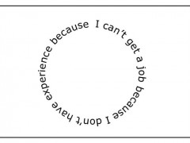

The prospect of finding summer employment can seem daunting and it can be difficult to know where to get started. The following is a consolidated list of resources and tips to help you kickstart your career in CS!
This is your one-stop shop to speak to ~100 companies, drop off resumes, and apply to jobs you wouldn’t otherwise know were available. This takes place every semester during the beginning half of the semester. It’s an opportunity to speak to recruiters about education requirements, salary expectations, corporate cultures, job requirements, industry growth and trends, and skills and qualifications. It can seem intimidating to students starting out in CS, but don’t be put off by your perceived lack of experience, you can gain experience networking and learn which skills to can focus on to make you a more attractive candidate!
For more information and to take a look at the companies who’ve participated in the past click here.
A lot of companies target McGill students via MyFuture.
Be proactive and check the websites of the companies you’re interested in frequently. A lot of companies such as Google, Microsoft, Expedia, the list goes on, have application deadlines as early as September and October so it is never too early to start applying! A lot more companies will open up applications in January and February for summer internships, so it is especially important to keep an eye out during this time.
As a rule of thumb, recruiting timelines tend to align with tech fair in both semesters so when you start brushing up your resume for tech fair, you’ll want to be checking out company websites for job postings.
Lastly, check job search engines such as Indeed , Talent Egg , and Hired. The list is seemingly endless! These can feel like a void, but nonetheless a good tool for general job search.
A lot of students can attest to hackathons being a great place to find jobs. The companies that sponsor these events will often send recruiters and company representatives to scope out for potential hires. This works to your advantage because they can see you in action and you can establish a connection inside of the company that you can reach out to once you apply.
For a beginner’s guide to hackathons, click here.
Stay in the loop with HackMcGill on their website or on Facebook.
If you have previous web/app development experience, HackMcGill Jobs is a marketplace for students in need of developers. If you’re interested in doing freelance work while at school, this is an option to make some cash while simultaneously adding experience to your resume.
You can browse through listings on the Facebook group.
The Computer Science Newsletter is a great resource for finding out about company information sessions hosted by the Engineering Career Centre (ECC), as well as Management and CaPS. These information sessions are a place to network with recruiters and company representatives, find out about job opportunities, and learn more about companies.
The CSUS Listserv (every Sunday in your inbox!) is another great place to find out about company information sessions and workshops organized by our VP Communications.
We'll also post event information on our Facebook Group. Like our page and check in regularly to stay in the loop.
Lastly, keep an eye out for job postings forwarded by Ann Jack! These come often and are a good alternative to sending out applications into the Internet void.
It can be difficult to land that first internship without any experience to show on your resume, and it can seem like you’re endlessly stuck in the unemployment cycle:
Fear not, there are plenty of ways to circumvent the cycle.
Non-academic projects are the best way to add to your resume and show recruiters you have passion and drive outside of the classroom. It’s not difficult to get started. A quick Google search will give you results for hundreds of project ideas you can work on in your free time. This is great because listing these projects in your resume will substantiate your knowledge in the programming languages and tools you’ve listed in your resume.
Remember to document all your work on an online repository like GitHub. You can include a link to your github on your resume so recruiters can browse through your work.
Additionally, there are a number of websites that post coding challenges. You can compete with other people, and share your solutions to interesting problems on github.
The following are just a few of the many websites with coding challenges:
COMP 396, COMP 361, COMP 401, and COMP 402 project courses are a good way to get hands on experience on software development methodologies, learn about the software development life cycle, as well as how to work in a group on large-scale software projects. These are beneficial for the soft skills portion of the interviewing process, as well as good anecdotal experiences for behavioural questions. Additionally, if you’re interested in summer research positions, you can get to know professors and their research, and they can get to know you.
We hope this guide has armed you with the tools to get out there and start your job search! Good luck!